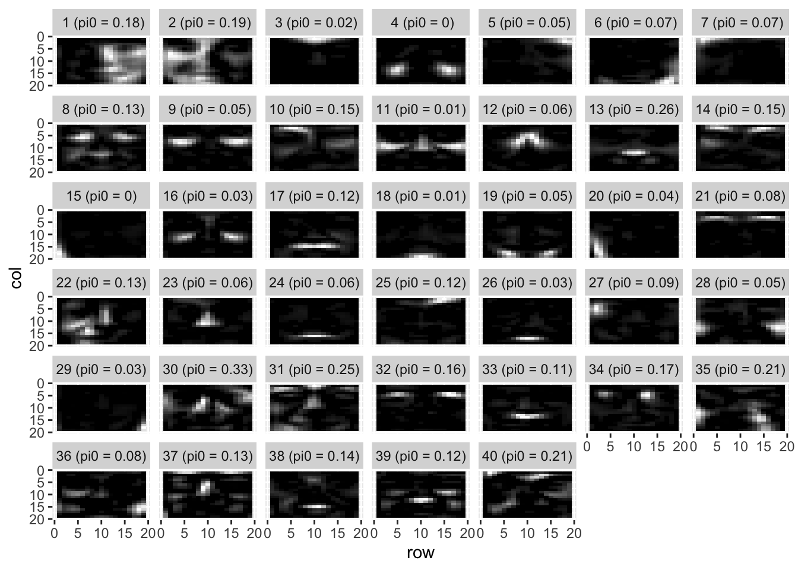
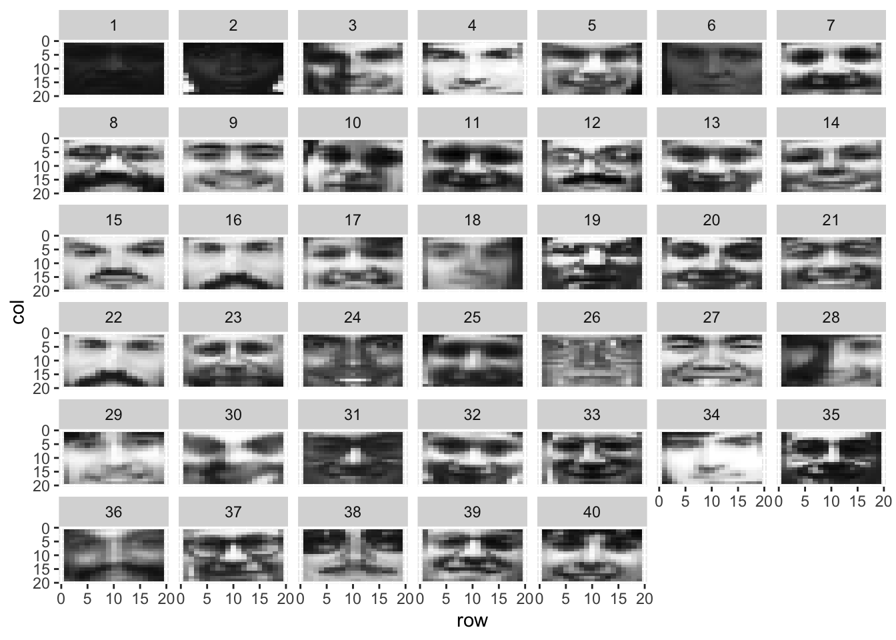
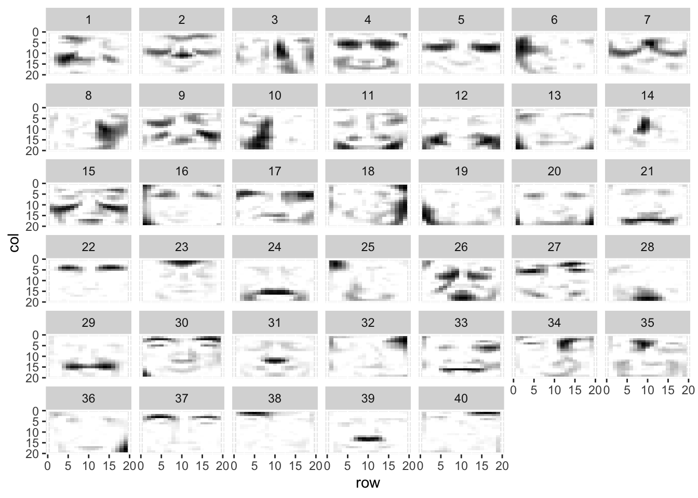

Last updated: 2024-02-07
Checks: 6 1
Knit directory: ebnmf-paper/
This reproducible R Markdown analysis was created with workflowr (version 1.7.1). The Checks tab describes the reproducibility checks that were applied when the results were created. The Past versions tab lists the development history.
The R Markdown file has unstaged changes. To know which version of
the R Markdown file created these results, you’ll want to first commit
it to the Git repo. If you’re still working on the analysis, you can
ignore this warning. When you’re finished, you can run
wflow_publish to commit the R Markdown file and build the
HTML.
Great job! The global environment was empty. Objects defined in the global environment can affect the analysis in your R Markdown file in unknown ways. For reproduciblity it’s best to always run the code in an empty environment.
The command set.seed(20231214) was run prior to running
the code in the R Markdown file. Setting a seed ensures that any results
that rely on randomness, e.g. subsampling or permutations, are
reproducible.
Great job! Recording the operating system, R version, and package versions is critical for reproducibility.
Nice! There were no cached chunks for this analysis, so you can be confident that you successfully produced the results during this run.
Great job! Using relative paths to the files within your workflowr project makes it easier to run your code on other machines.
Great! You are using Git for version control. Tracking code development and connecting the code version to the results is critical for reproducibility.
The results in this page were generated with repository version f737498. See the Past versions tab to see a history of the changes made to the R Markdown and HTML files.
Note that you need to be careful to ensure that all relevant files for
the analysis have been committed to Git prior to generating the results
(you can use wflow_publish or
wflow_git_commit). workflowr only checks the R Markdown
file, but you know if there are other scripts or data files that it
depends on. Below is the status of the Git repository when the results
were generated:
Ignored files:
Ignored: .DS_Store
Ignored: .Rhistory
Ignored: .Rproj.user/
Ignored: analysis/figure/
Ignored: data/.DS_Store
Untracked files:
Untracked: code/bush.R
Untracked: code/cbcl.R
Untracked: data/cbcl.rds
Untracked: data/faces.tar.gz
Untracked: data/faces/
Untracked: data/frey_rawface.mat
Untracked: data/lfw-bush.rds
Untracked: data/lfw-bush/
Untracked: data/lfw-deepfunneled.rds
Untracked: data/lfw-deepfunneled/
Unstaged changes:
Modified: analysis/cbcl.Rmd
Modified: analysis/swimmer.Rmd
Note that any generated files, e.g. HTML, png, CSS, etc., are not included in this status report because it is ok for generated content to have uncommitted changes.
These are the previous versions of the repository in which changes were
made to the R Markdown (analysis/cbcl.Rmd) and HTML
(docs/cbcl.html) files. If you’ve configured a remote Git
repository (see ?wflow_git_remote), click on the hyperlinks
in the table below to view the files as they were in that past version.
| File | Version | Author | Date | Message |
|---|---|---|---|---|
| html | d066da8 | Jason Willwerscheid | 2024-02-06 | Build site. |
| Rmd | 0ba2b3d | Jason Willwerscheid | 2024-02-06 | workflowr::wflow_publish("analysis/cbcl.Rmd") |
| html | 6623aeb | Jason Willwerscheid | 2024-02-05 | Build site. |
| Rmd | 1c3438c | Jason Willwerscheid | 2024-02-05 | workflowr::wflow_publish("analysis/cbcl.Rmd") |
Load packages:
library(tidyverse)── Attaching core tidyverse packages ──────────────────────── tidyverse 2.0.0 ──
✔ dplyr 1.1.4 ✔ readr 2.1.5
✔ forcats 1.0.0 ✔ stringr 1.5.1
✔ ggplot2 3.4.4 ✔ tibble 3.2.1
✔ lubridate 1.9.3 ✔ tidyr 1.3.0
✔ purrr 1.0.2
── Conflicts ────────────────────────────────────────── tidyverse_conflicts() ──
✖ dplyr::filter() masks stats::filter()
✖ dplyr::lag() masks stats::lag()
ℹ Use the conflicted package (<http://conflicted.r-lib.org/>) to force all conflicts to become errorslibrary(tictoc)
library(flashier)Loading required package: ebnm
Loading required package: magrittr
Attaching package: 'magrittr'
The following object is masked from 'package:purrr':
set_names
The following object is masked from 'package:tidyr':
extractRead in data. Note that the coding matters. The usual coding is to set black at 0 and white as 1 (or 255). I think it makes more sense to invert it (so, white as 0 and black at 1) but I will look at both results.
cbcl_black0 <- readRDS("data/cbcl.rds")
cbcl_white0 <- 1 - cbcl_black0I fit EBNMF using feature-specific (pixel-specific) variance with
backfitting. The greedy approach can have a lot of trouble with
initialization, so: 1. I use a custom initialization function that takes
the best factor out of 10 attempts (for now, requires installing
flashier from the init-with-restarts branch);
2. I backfit after each 10 factors added.
Fit with black = 0:
tic()
my_init <- function(f) {
flash_greedy_init_default(
f,
sign_constraints = c(1, 1),
n_trials = 10
)
}
fl_black0 <- flash_init(cbcl_black0, var_type = 1)
for (i in 1:5) {
fl_black0 <- fl_black0 |>
flash_greedy(
Kmax = min(10, 40 - fl_black0$n_factors),
ebnm_fn = ebnm_point_exponential,
init_fn = my_init
) |>
flash_backfit(maxiter = 100)
}Adding factor 1 to flash object...
Adding factor 2 to flash object...
Adding factor 3 to flash object...
Adding factor 4 to flash object...
Adding factor 5 to flash object...
Adding factor 6 to flash object...
Adding factor 7 to flash object...
Adding factor 8 to flash object...
Adding factor 9 to flash object...
Adding factor 10 to flash object...Warning in scale.EF(best.EF): Fitting stopped after the initialization function
failed to find a non-zero factor.Factor doesn't significantly increase objective and won't be added.
Wrapping up...
Done.
Backfitting 9 factors (tolerance: 1.31e-02)...
Difference between iterations is within 1.0e+04...
Difference between iterations is within 1.0e+03...
Difference between iterations is within 1.0e+02...
--Maximum number of iterations reached!
Wrapping up...
Done.
Adding factor 10 to flash object...
Adding factor 11 to flash object...
Adding factor 12 to flash object...
Adding factor 13 to flash object...
Adding factor 14 to flash object...
Adding factor 15 to flash object...
Adding factor 16 to flash object...
Adding factor 17 to flash object...
Adding factor 18 to flash object...
Adding factor 19 to flash object...
Wrapping up...
Done.
Backfitting 19 factors (tolerance: 1.31e-02)...
Difference between iterations is within 1.0e+04...
Difference between iterations is within 1.0e+03...
Difference between iterations is within 1.0e+02...
Difference between iterations is within 1.0e+01...
--Maximum number of iterations reached!
Wrapping up...
Done.
Adding factor 20 to flash object...
Adding factor 21 to flash object...
Adding factor 22 to flash object...
Adding factor 23 to flash object...
Adding factor 24 to flash object...
Adding factor 25 to flash object...
Adding factor 26 to flash object...
Adding factor 27 to flash object...
Adding factor 28 to flash object...
Adding factor 29 to flash object...
Wrapping up...
Done.
Backfitting 29 factors (tolerance: 1.31e-02)...
Difference between iterations is within 1.0e+04...
Difference between iterations is within 1.0e+03...
Difference between iterations is within 1.0e+02...
Difference between iterations is within 1.0e+01...
--Maximum number of iterations reached!
Wrapping up...
Done.
Adding factor 30 to flash object...
Adding factor 31 to flash object...
Adding factor 32 to flash object...
Adding factor 33 to flash object...
Adding factor 34 to flash object...
Adding factor 35 to flash object...
Adding factor 36 to flash object...
Adding factor 37 to flash object...
Adding factor 38 to flash object...
Adding factor 39 to flash object...
Wrapping up...
Done.
Backfitting 39 factors (tolerance: 1.31e-02)...
Difference between iterations is within 1.0e+03...
Difference between iterations is within 1.0e+02...
--Maximum number of iterations reached!
Wrapping up...
Done.
Adding factor 40 to flash object...
Wrapping up...
Done.
Backfitting 40 factors (tolerance: 1.31e-02)...
Difference between iterations is within 1.0e+02...
Difference between iterations is within 1.0e+01...
--Maximum number of iterations reached!
Wrapping up...
Done.toc()208.524 sec elapsedUsing these tricks EBNMF fits the maximum number of factors (40). The final fit is fairly loose, with the difference between iterations pretty far from the default tolerance, but it should still give us a good idea of what kind of fit the greedy approach will produce.
Fit with white = 0:
tic()
fl_white0 <- flash_init(cbcl_white0, var_type = 1)
for (i in 1:5) {
fl_white0 <- fl_white0 |>
flash_greedy(
Kmax = min(10, 40 - fl_white0$n_factors),
ebnm_fn = ebnm_point_exponential,
init_fn = my_init
) |>
flash_backfit(maxiter = 100)
}Adding factor 1 to flash object...
Adding factor 2 to flash object...
Adding factor 3 to flash object...
Adding factor 4 to flash object...
Adding factor 5 to flash object...
Adding factor 6 to flash object...
Adding factor 7 to flash object...
Adding factor 8 to flash object...Warning in scale.EF(best.EF): Fitting stopped after the initialization function
failed to find a non-zero factor.Factor doesn't significantly increase objective and won't be added.
Wrapping up...
Done.
Backfitting 7 factors (tolerance: 1.31e-02)...
Difference between iterations is within 1.0e+04...
Difference between iterations is within 1.0e+03...
Difference between iterations is within 1.0e+02...
Difference between iterations is within 1.0e+01...
--Maximum number of iterations reached!
Wrapping up...
Done.
Adding factor 8 to flash object...
Adding factor 9 to flash object...
Adding factor 10 to flash object...
Adding factor 11 to flash object...
Adding factor 12 to flash object...
Adding factor 13 to flash object...
Adding factor 14 to flash object...
Adding factor 15 to flash object...
Adding factor 16 to flash object...
Adding factor 17 to flash object...
Wrapping up...
Done.
Backfitting 17 factors (tolerance: 1.31e-02)...
Difference between iterations is within 1.0e+04...
Difference between iterations is within 1.0e+03...
Difference between iterations is within 1.0e+02...
Difference between iterations is within 1.0e+01...
--Maximum number of iterations reached!
Wrapping up...
Done.
Adding factor 18 to flash object...
Adding factor 19 to flash object...
Adding factor 20 to flash object...
Adding factor 21 to flash object...
Adding factor 22 to flash object...
Adding factor 23 to flash object...
Adding factor 24 to flash object...
Adding factor 25 to flash object...
Adding factor 26 to flash object...
Adding factor 27 to flash object...
Wrapping up...
Done.
Backfitting 27 factors (tolerance: 1.31e-02)...
Difference between iterations is within 1.0e+04...
Difference between iterations is within 1.0e+03...
Difference between iterations is within 1.0e+02...
Difference between iterations is within 1.0e+01...
--Maximum number of iterations reached!
Wrapping up...
Done.
Adding factor 28 to flash object...
Adding factor 29 to flash object...
Adding factor 30 to flash object...
Adding factor 31 to flash object...
Adding factor 32 to flash object...
Adding factor 33 to flash object...
Adding factor 34 to flash object...
Adding factor 35 to flash object...
Adding factor 36 to flash object...
Adding factor 37 to flash object...
Wrapping up...
Done.
Backfitting 37 factors (tolerance: 1.31e-02)...
Difference between iterations is within 1.0e+04...
Difference between iterations is within 1.0e+03...
Difference between iterations is within 1.0e+02...
--Maximum number of iterations reached!
Wrapping up...
Done.
Adding factor 38 to flash object...
Adding factor 39 to flash object...
Adding factor 40 to flash object...
Wrapping up...
Done.
Backfitting 40 factors (tolerance: 1.31e-02)...
Difference between iterations is within 1.0e+03...
Difference between iterations is within 1.0e+02...
Difference between iterations is within 1.0e+01...
--Maximum number of iterations reached!
Wrapping up...
Done.toc()181.908 sec elapsedEBNMF is able to find 40 factors in the white = 0 case as well. Note that without using these tricks, only six factors were found.
The components with black coded as 0 appear as follows (ordered by
decreasing PVE). The pi0 in the labels refers to the
mixture weight placed on the point mass in the estimated
point-exponential prior on observations (faces). Components with small
pi0 are shared across many faces; those with large pi0 appear in
fewer.
plot_faces <- function(fitted_L, comp_labels, black0 = TRUE) {
n <- 19
p <- 19
tib <- as_tibble(fitted_L) |>
mutate(
col = rep(1:n, times = p),
row = rep(1:p, each = n),
) |>
pivot_longer(
cols = -c(row, col),
names_to = "k",
values_to = "loading",
names_prefix = "V",
names_transform = as.numeric
) |>
mutate(
label = rep(comp_labels, times = n * p)
)
p <- ggplot(tib, aes(x = row, y = col, fill = loading)) +
geom_tile() +
scale_y_reverse() +
facet_wrap(~label) +
guides(fill = "none")
if (black0) {
p <- p + scale_fill_gradient(low = "black", high = "white")
} else {
p <- p + scale_fill_gradient(low = "white", high = "black")
}
return(p)
}
fl_reorder <- fl_black0 |>
flash_factors_reorder(order(fl_black0$pve, decreasing = TRUE))
fitted_L <- ldf(fl_reorder, type = "m")$L
F_sparsity <- round(sapply(fl_reorder$F_ghat, function(k) k$pi[1]), 2)
labs <- paste0(formatC(1:ncol(fitted_L), width = 2), " (pi0 = ", F_sparsity, ")")
plot_faces(fitted_L, labs)Warning: The `x` argument of `as_tibble.matrix()` must have unique column names if
`.name_repair` is omitted as of tibble 2.0.0.
ℹ Using compatibility `.name_repair`.
This warning is displayed once every 8 hours.
Call `lifecycle::last_lifecycle_warnings()` to see where this warning was
generated.
To more clearly see what kinds of faces each component is capturing, I extract the face with the largest L1-normalized loading for each component:
fitted_F <- ldf(fl_reorder, type = "m")$F
typical <- apply(fitted_F, 2, which.max)
plot_faces(cbcl_black0[, typical], 1:ncol(fitted_F))
| Version | Author | Date |
|---|---|---|
| d066da8 | Jason Willwerscheid | 2024-02-06 |
The above representation looks very “parts-based” to me (component 17 even gives us a mustache!). Maybe we can do even better by increasing the number of components \(K\).
Components:
fl_reorder <- fl_white0 |>
flash_factors_reorder(order(fl_white0$pve, decreasing = TRUE))
fitted_L <- ldf(fl_reorder, type = "m")$L
F_sparsity <- round(sapply(fl_reorder$F_ghat, function(k) k$pi[1]), 2)
labs <- paste0(formatC(1:ncol(fitted_L), width = 2), " (pi0 = ", F_sparsity, ")")
plot_faces(fitted_L, labs, black0 = FALSE)
| Version | Author | Date |
|---|---|---|
| d066da8 | Jason Willwerscheid | 2024-02-06 |
Representative faces:
fitted_F <- ldf(fl_reorder, type = "m")$F
typical <- apply(fitted_F, 2, which.max)
plot_faces(cbcl_white0[, typical], 1:ncol(fitted_F), black0 = FALSE)
| Version | Author | Date |
|---|---|---|
| d066da8 | Jason Willwerscheid | 2024-02-06 |
These results look different, but I’m not sure it makes much of a difference. Factors have similar sparsity:
mean(sapply(fl_black0$L_ghat, function(k) k$pi[1]))[1] 0.5692824mean(sapply(fl_white0$L_ghat, function(k) k$pi[1]))[1] 0.5841086tic()
nmf_res <- RcppML::nmf(cbcl_white0, k = 40, verbose = FALSE)
fl_nmfinit <- flash_init(cbcl_white0, var_type = 1) |>
flash_set_verbose(1) |>
flash_factors_init(list(nmf_res$w %*% diag(sqrt(nmf_res$d)),
t(nmf_res$h) %*% diag(sqrt(nmf_res$d))),
ebnm_fn = ebnm_point_exponential) |>
flash_backfit(maxiter = 500) |>
flash_nullcheck()Backfitting 40 factors (tolerance: 1.31e-02)...
Difference between iterations is within 1.0e+03...
Difference between iterations is within 1.0e+02...
Difference between iterations is within 1.0e+01...
Difference between iterations is within 1.0e+00...
--Maximum number of iterations reached!
Wrapping up...
Done.
Nullchecking 40 factors...
Done.toc()243.276 sec elapsedNote that no components were removed in the flash fit. The NMF components appear as follows:
nmf_F <- t(t(nmf_res$w) / apply(nmf_res$w, 2, max))
plot_faces(nmf_F, 1:40, black0 = FALSE)
| Version | Author | Date |
|---|---|---|
| d066da8 | Jason Willwerscheid | 2024-02-06 |
The EBNMF components appear as follows (I do not reorder so that they can be compared directly with NMF):
fitted_L <- ldf(fl_nmfinit, type = "m")$L
F_sparsity <- round(sapply(fl_nmfinit$F_ghat, function(k) k$pi[1]), 2)
labs <- paste0(formatC(1:ncol(fitted_L), width = 2), " (pi0 = ", F_sparsity, ")")
plot_faces(fitted_L, labs, black0 = FALSE)Of all three fits, the greedy algorithm gives the best elbo:
fl_black0$elbo[1] 1133988fl_white0$elbo[1] 1139852fl_nmfinit$elbo[1] 1136948
sessionInfo()R version 4.3.2 (2023-10-31)
Platform: aarch64-apple-darwin20 (64-bit)
Running under: macOS Monterey 12.3
Matrix products: default
BLAS: /Library/Frameworks/R.framework/Versions/4.3-arm64/Resources/lib/libRblas.0.dylib
LAPACK: /Library/Frameworks/R.framework/Versions/4.3-arm64/Resources/lib/libRlapack.dylib; LAPACK version 3.11.0
locale:
[1] en_US.UTF-8/en_US.UTF-8/en_US.UTF-8/C/en_US.UTF-8/en_US.UTF-8
time zone: America/New_York
tzcode source: internal
attached base packages:
[1] stats graphics grDevices utils datasets methods base
other attached packages:
[1] flashier_1.0.21 magrittr_2.0.3 ebnm_1.1-6 tictoc_1.2
[5] lubridate_1.9.3 forcats_1.0.0 stringr_1.5.1 dplyr_1.1.4
[9] purrr_1.0.2 readr_2.1.5 tidyr_1.3.0 tibble_3.2.1
[13] ggplot2_3.4.4 tidyverse_2.0.0 workflowr_1.7.1
loaded via a namespace (and not attached):
[1] softImpute_1.4-1 gtable_0.3.4 xfun_0.41 bslib_0.6.1
[5] processx_3.8.3 lattice_0.21-9 callr_3.7.3 tzdb_0.4.0
[9] vctrs_0.6.5 tools_4.3.2 ps_1.7.5 generics_0.1.3
[13] parallel_4.3.2 fansi_1.0.6 highr_0.10 pkgconfig_2.0.3
[17] Matrix_1.6-1.1 SQUAREM_2021.1 lifecycle_1.0.4 truncnorm_1.0-9
[21] farver_2.1.1 compiler_4.3.2 git2r_0.33.0 RcppML_0.3.7
[25] munsell_0.5.0 getPass_0.2-4 httpuv_1.6.13 htmltools_0.5.7
[29] sass_0.4.8 yaml_2.3.8 crayon_1.5.2 later_1.3.2
[33] pillar_1.9.0 jquerylib_0.1.4 whisker_0.4.1 cachem_1.0.8
[37] trust_0.1-8 tidyselect_1.2.0 digest_0.6.34 stringi_1.8.3
[41] ashr_2.2-63 labeling_0.4.3 splines_4.3.2 rprojroot_2.0.4
[45] fastmap_1.1.1 grid_4.3.2 colorspace_2.1-0 cli_3.6.2
[49] invgamma_1.1 utf8_1.2.4 withr_2.5.2 scales_1.3.0
[53] promises_1.2.1 horseshoe_0.2.0 timechange_0.2.0 rmarkdown_2.25
[57] httr_1.4.7 deconvolveR_1.2-1 hms_1.1.3 evaluate_0.23
[61] knitr_1.45 irlba_2.3.5.1 rlang_1.1.3 Rcpp_1.0.12
[65] mixsqp_0.3-54 glue_1.7.0 rstudioapi_0.15.0 jsonlite_1.8.8
[69] R6_2.5.1 fs_1.6.3